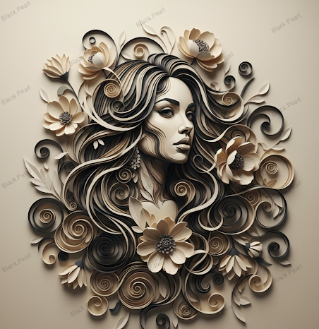
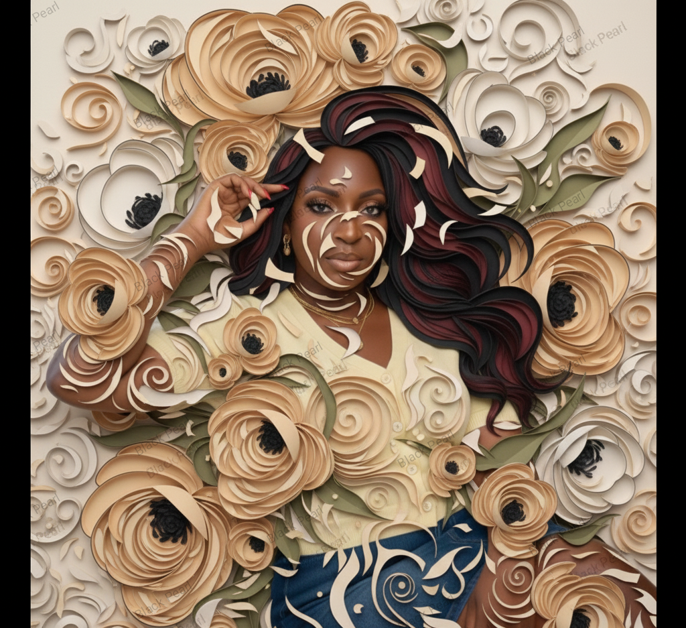

COLLECTION II
Becoming
Who are we becoming?
Identity is never finished. Every experience leaves a trace, every encounter reshapes us, and every decision carries us toward someone new.
COLLECTION STATEMENT
Becoming explores identity as a continual process rather than a fixed destination. Through moments of transformation, vulnerability, resilience, and renewal, the collection reflects on the many ways human beings are shaped by experience. Each work invites viewers to consider not only who they are today, but who they are continually becoming.
RECURRING THEMES

Liminal explores the uncertain space between who we have been and who we are becoming. Existing between endings and beginnings, it reflects on transformation as a necessary passage rather than a destination, inviting viewers to embrace uncertainty as part of growth.
Collection: Becoming
Status: Available
$40
Bloom celebrates quiet growth. Rather than dramatic transformation, the work reflects on the gradual unfolding of identity through patience, resilience, and time. It reminds us that becoming often happens unnoticed until we finally recognise how far we have come.
Collection: Becoming
Status: Available
$20


Floressence explores the harmony between inner growth and outward expression. Like a flower opening to light, the work reflects the courage required to reveal one's authentic self while remaining rooted in resilience and hope.
Collection: Becoming
Status: Available
$20
Poise reflects the quiet strength required to remain centred amid uncertainty. The work suggests that true balance is not the absence of struggle but the ability to move through change with grace, confidence, and inner stability.
Collection: Becoming
Status: Available
$40
Ethereal explores the unseen dimensions of human experience—intuition, imagination, and the quiet moments that cannot easily be explained. It invites viewers to consider that transformation often begins within the invisible landscape of thought and feeling.
Collection: Becoming
Status: Available
$30
Echo reflects on the lasting influence of moments, relationships, and decisions. Long after experiences have passed, their echoes continue to shape identity, reminding us that becoming is a conversation between the past and the future.
Collection: Becoming
Status: Available
$20
GALLERY ROOM I COMPLETE
These first six works explore transformation through growth, resilience, balance, and reflection. Continue into Gallery Room II to encounter the final works of Becoming.